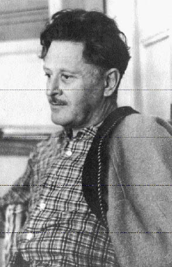
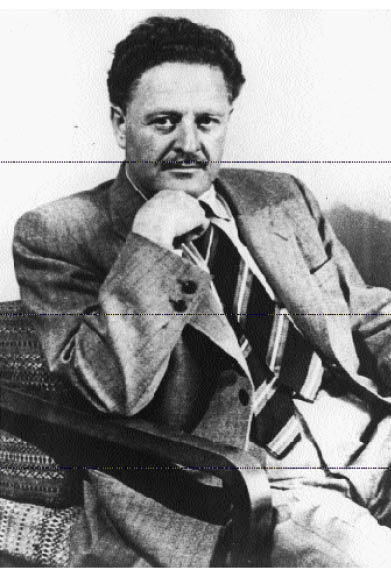

1951-1963 DÖNEMİ
Bu dönemin en önemli edebiyat olaylarından biri, Nâzım Hikmet’in şiirlerinin ve eserlerinin yeniden yayımlanmaya başlamasıdır. Yön dergisi uygarca bir cesaretle 1964’te bu mutlu başlayışa önayak olur. Kısa bir sunuş yazısıyla şairin üç şiirini yayımlar. Yazıda özetle şöyle denilir:
“... Nâzım Hikmet, sayın Nadir Nadi’nin belirttiği üzere, öldürüleceği kanısıyla memleketten kaçmıştır. Büyük şairin öldürülme pahasına da olsa, kaçmamasını tercih ederdik. Fakat memleketten kaçışı ve inançları hakkında ne düşünürsek düşünelim, onun Türk kültürünü ve dilini zenginleştiren büyük bir şair olduğu gerçeğine gözümüzü kapamaya hakkımız yoktur. Aksi halde, aydınlık görevimize ihanet etmiş, kültürden korkan yobaz durumuna düşmüş oluruz.
“Yön, şairin şahsında şiiri mahkûm eden yobaz zihniyetin ağır baskısına rağmen, Nâzım Hikmet’in memleketçi şiirlerini yayınlamakla, aydınlarımızı bu utanç verici durumdan kurtardığı ve Türk kültürüne hizmet ettiği inancındadır.”
Nâzım Hikmet’in Yön’de 1967 yılına dek birçok şiiri ve kişiliğiyle ilgili yazılar yayımlanır. Bunu başka dergilerdeki yayımlar izler. Yeni Dergi (1964-1969), Sosyal Adalet (1965), Dost (1966-1967), Papirüs (1967-1968), Gerçekler Postası (1967), May (1968-1969), Ant (1968), Yeni Gerçek (1968), Türk Solu (1968), Forum (1969) dergilerinde basılan şiirler buna örnektir.
Nâzım Hikmet’in dergilerdeki şiirlerinin ardından eski kitapları da yeniden gün ışığına çıkar: 835 Satır (1965), Sesini Kaybeden Şehir (1965), Varan 3 (1965), Jokond ile Si-Ya-U (1965), Benerci Kendini Niçin Öldürdü (1965), Taranta Babu’ya Mektuplar (1965), Gece Gelen Telgraf (1966), Portreler (1966), 1+1=Bir (1966), Simavne Kadısı Oğlu Şeyh Bedreddin Destanı (1966).
Bunlara, İlk Şiirleri (1969) ile 1940-1950 döneminde yazılıp da basılamayan Dört Hapishaneden (1966), Saat 21-22 Şiirleri (1965), Rubailer (1966), Memleketimden İnsan Manzaraları (1966-1967), Kurtuluş Savaşı Destanı (1965), Kuvâyi Milliye Destanı (1968) ve son dönemde kaleme alınan Yeni Şiirler (1966), Son Şiirleri (1970) adlı kitaplar eklenir. Bunlardan Saat 21-22 Şiirleri, Dört Hapisaneden, Son Şiirleri için komünizm propagandası suçlamasıyla kovuşturma açılır. Fakat yargılanmalar hep aklanmayla sonuçlanır.
Nâzım Hikmet yeniden askere alınma ve Sabahattin Ali gibi öldürülme tasasıyla çok sevdiği memleketini, karısını, çocuğunu ve dostlarını bırakarak 1951’de Türkiye’den kaçmak zorunda kalır. Dışarıda sık sık yolculuğa çıkar, dünyayı dolaşır. Örneğin, Viyana’ya, Kahire’ye, Paris’e, Varna’ya, Prag’a, Sofya’ya, Berlin’e, Varşova’ya, Bükreş’e, Havana’ya, Tanganika’ya gider. Fakat bir sürgün gibi gönlü hep yurdunda, sevdiklerindedir. Sanki sevgilisi yurdudur artık, yurdu ise sevgilisidir. Birini anlatınca ötekini de anlatmış olmaktadır:
Sen esirliğim ve hürriyetimsin:
Çıplak bir yaz gecesi gibi yanan etimsin.
Sen memleketimsin.
(...)
1951-1959 ARASI
Nâzım Hikmet’in yurt dışında yazdığı şiirler 1951-1959 ve 1960-1970 diye iki bölümde toplanabilir. Birinci dönemin ürünleri çoğunlukla Yeni Şiirler’de, ikinci dönemindekiler ise Son Şiirleri’nde yer alırlar. Gelgelelim, bu sınıflama kesin değildir. Çünkü 1937’ye değin birkaç kez basılan kitaplar arasında –az da olsa– geçişler vardır. Örneğin, 1960 öncesi bazı şiirler ikinci kitaba konulduğu gibi, 1960 sonrası bazı şiirler de birinci kitaba konulmuştur. Hatta, her iki kitapta birden bulunan örneklere bile rastlanmaktadır. Bundan ötürü, bu düzensizliği ortadan kaldıran ve her iki derlemeyi de yeniden sıraya sokan 1987’deki son basımları temel alacağım.
YENİ ŞİİRLER
Yeni Şiirler’i Sabahattin Bayramof derlemiş. İlkin 1962’de Bulgaristan’da, sonra 1966-1978 döneminde Türkiye’de yedi kez basılmış. İçinde Nâzım Hikmet’in 1947-1962 yılları arasında yazdığı şiirlerden bazıları var. Fakat, bunlardan 1950 öncesinin tarihini taşıyanlar az: “İbrahim Balaban’ın Bahar Tablosu Üstüne Söylenmiştir, Yaşamaya dair”. Öte yandan, 1960 sonrasının ürünleri de çok değil: “Sabah Karanlığı, Vera’nın Uykudan Uyanışı, Havana Röportajı, Otobiyografi, Saman Sarısı, Yılbaşı Ağacı”.
Yeni Şiirler’in 1987’de yapılan ve tarihsel sıralamayı göz önünde tutan basımında140 1951’den önce yazılanlar Yatar Bursa Kalesinde’ye, 1959’dan sonrakiler Son Şiirleri’ne aktarılmıştır. Buna karşılık Tüm Eserleri dizisinin VII. cildindeki “Eserlerine Girmeyen Şiirleri” bölümünden141 1951-1959 yılları arasında yazılmış olanlar Yeni Şiirler’e konulmuştur. Bu yüzden, Yeni Şiirler’in son basımı öncekilerden daha çok ürünü içermektedir.
Bunların bir kesimi Sovyetler Birliği’nde yazılmıştır. Geri kalanlar ise Almanya, Çin, Polonya, Çekoslovakya, Macaristan, Bulgaristan, İsviçre, Fransa, Küba, Mısır gibi yabancı ülkelerde 1952-1958 yıllarında kaleme alınmışlardır. Bundan ötürü Nâzım Hikmet’in daha çok yurt dışında geçirdiği üzüntülü yaşantıların izlerini taşırlar. Nitekim, çoğu şiirlerde memleket sevgisi ve övgüsü, yurt ve aile özlemi, aşk ve ayrılık acısı, gençlik anıları ve gezilen ülkelerin izlenimleri yansıtılır. Bu bakımdan, 1958’de yazılan “Umut” başlıklı şiirden alınan şu parçanın kitabı içerikçe özetlediğini söylemek yanlış olmaz:
(...)
Ve güneş doğarken ben bir geceyi,
bir uzun geceyi yine uykusuz
ağrılar içinde geçirmişimdir.
Düşünmüşüm hasretliği, ölümü,
seni, memleketi düşünmüşümdür,
seni, memleketi ve dünyamızı.
(...)
Yeni Şiirler’de bu içerikle yan yana, hatta iç içe derin bir yaşam, insan ve doğa sevgisi bulunur. O kadar ki, en korkulu ve acılı durumlarda bile yaşamaya ve insanlara bağlılıktan vazgeçilmez. Sözgelimi “Mesaj” şiirinde, ağır hasta yatarken bile, ölüme karşı yaşam savunulur. Hastalara umut, direnç ve yaşama sevgisi aşılanmaya çalışılır:
(...)
Hastalar, kardeşlerim,
biraz daha sabır, biraz daha inat.
Kapının arkasında bekleyen ölüm değil,
hayat.
Kapının arkasında dünya,
dünya cıvıl cıvıl.
Kalkacaksınız yatağınızdan,
gideceksiniz.
Tuzun, ekmeğin, güneşin, tadını
yeni baştan keşfedeceksiniz.
(..)
Nâzım Hikmet kendi yurdunun doğası, insanı, halkı gibi bütün öteki yurtların doğaları ile acı çeken insanlarını ve halklarını da dil, din, cins, ırk ayrımı yapmaksızın büyük bir sevgi ve saygıyla kucaklar. Hiçbirini yüceltmez ya da aşağılamaz. Hepsinin de üzüntülerini paylaşmak, sorunlarını çözmelerine yardımcı olmak ister. Bir “Postacı” olup bekleyiş, üzüntü ve sıkıntı içinde bunalan herkese dünyanın dört bucağından “kuş cıvıltısıyla, taze çimen kokusuyla dolu” haberler, mektuplar iletmek ister.
Yeni Şiirler’in ilk basımlarına alınmamakla birlikte, aynı dönemde (1958’de) yazılmış olan “Orası” şiiri bu isteğin kanıtlarından biridir:
Sayın halkları bütün ırkların
Endonezyalısı, Almanı, Eskimosu,
Sudanlısı, Çinlisi, Türkü, Ermenisi,
Yahudisi, Arabı, Lehlisi, Rusu,
Meksikalısı, Norveçlisi, Kırgızı
Abhazyalısı, Hintlisi, Kürdü, Fransızı,
Farsı, Liberyalısı, İngilizi,
Amerikalısı:
ak, kara, kırmızı,
tükenir mi saymakla
ve adını duymadıklarım,
hepinizi, hepinizi
yerlere kadar eğilerek selâmlarım.
Saygıyla, şefkatle, bahtiyar, severim sizi.
Ne birbirinizden üstün
ne birbirinizden aşağı,
gönlümün tahtında yan yana oturursunuz.
(...)
Başka ürünlerde de dile getirilen bu bilinçli, inançlı sevgi ve saygının şiirlerde iki ana yoldan yürüdüğü görülür: Emperyalizme karşı ulusal bağımsızlık ve savaşa karşı barış...
Cemal Abdülnasır 1956’da Süveyş Kanalı’nı ulusallaştırır. Bunun üzerine İngiltere ile Fransa Mısır’a saldırır, bazı kentleri bombalarlar. Ancak Birleşmiş Milletler ile Sovyetler’in araya girmesiyle geri çekilirler.
Bu saldırganlığa karşı Nâzım Hikmet, Mısır’ın bağımsızlık kavgasını destekleyen iki şiir yazar: “İstiklâl”, “Ya Avni, Ya Habibi”. Bunlardan birincisinde Mısır’ın o günkü durumunu Türkiye’nin Kurtuluş Savaşı’na başladığı günlerdeki durumuna benzetir. Mısır halkıyla Türk halkının kardeş olduklarını öne sürer:
(...)
Mısırlı kardeşim;
şarkılarımız kardeştir;
isimlerimiz kardeş,
yoksulluğumuz kardeştir,
yorgunluğumuz kardeş.
(...)
Nâzım Hikmet bağımsızlık gibi barışa da büyük önem verir. “Bulutlar Adam Öldürmesin” (1955), “Kız Çocuğu”, (1956), “Japon Balıkçısı” (1956), “Silâhsız İnsanlar” (1956), “Stronsium 90” (1958), “Umut” (1958) başlıklı şiirler buna iyi birer örnektir. Bunlarda atom savaşının getirdiği büyük yıkımlar, acılar vurgulanır. Örneğin “Kız Çocuğu”nda A.B.D’nin İkinci Dünya Savaşı’nda Hiroşima’ya attığı atom bombasından söz edilir. Bomba 6 Ağustos 1945’te uçakla kente atılmış ve 250 bin kişi ölmüştür. 9 Ağustos’ta Nagazaki’ye bırakılan bombayla da 150 bin kişi yaşamını yitirmiştir. Şiirde belirtildiğine göre, kız çocuğunun önce saçları tutuşmuş, sonra gözleri yanıp kavrulmuş, bütün vücudu kül olup havaya savrulmuştur. Kendisi için isteyeceği hiçbir şey kalmamıştır. Kâğıt gibi yanan çocuklar şeker bile yiyemez ki... Şimdi onun bizden bir tek isteği vardır: Hidrojen bombası deneme ve üretiminin yasaklanması. Bunun için, elindeki dilekçeyi imzalamamız gerekmektedir:
(...)
Çalıyorum kapınızı,
teyze, amca bir imza ver.
Çocuklar öldürülmesin
şeker de yiyebilsinler.
Söz konusu dilekçeyi, atom bombasının kullanılışının onuncu yılında, 6 Ağustos 1955’te Hiroşima’da yapılan Uluslararası Barış Kongresi hazırlamış ve 33 milyon insan imzalamıştır.142
Dünya Barış Konseyi 19 Mart 1950’de Stockholm Çağrısı’nı yayımlar, nükleer silahların yapımının ve kullanılmasının yasaklanmasını ister. Buna aldırmayan Amerika 1952’de Eniwetok Atoll bölgesinde, 1954’te Japonya yakınındaki Bikini adasında hidrojen bombasını dener. Bombanın patlamasından oluşan zehirli gazlar çevreye yayılır. Bulutlar halinde uzaklara gider. Onların etkisi altında kalan kimi Japon balıkçıları hastalanır. Zehirlenmiş balıkları yiyenler ölür. “Japon Balıkçısı” şiirinde Nâzım Hikmet bu olayla birlikte atom denemelerinin ölümcül sonuçlarına parmak basar:
(...)
Balık tuttuk, yiyen ölür.
Birden değil, ağır ağır,
Etleri çürür, dağılır.
Balık tuttuk yiyen ölür.
Elimize değen ölür,
Tuzla, güneşle yıkanan
Bu vefalı bu çalışkan
Elimize değen ölür.
Birden değil, ağır ağır;
Etleri çürür, dağılır,
Elimize değen ölür...
(...)
Öbür yandan, adı geçen şiirlerde insanların ortak barış isteği de belirtilir. “Silahsız İnsanlar”da ise barış içinde kardeşçe yaşamanın güzelliği yansıtılır:
(..)
Geceler beyazdı, gündüzler serin,
Sözleri döğdüler dan dan da din din.
Örsünde sıcacık yüreklerinin
Ölüm bu sözlerden güçlü değildi.
Sıcak ve yumuşak bir deyişle çokluk “türkü” biçiminde 8 ya da 11’li hece ölçüsüyle yazılan ve ince, insancıl bir duyarlıkla beslenen bu şiirler emperyalizmin saldırganlığına karşı yürütülen uluslararası barış hareketiyle dayanışarak evrenselliğe ulaştırır bizi ve Türkiye yurttaşı olduğu kadar dünya yarttaşı kılar Nâzım Hikmet’i.
Gelgelelim, dünya yurttaşlığı yalnızca barış konusunda değil, insanların kardeşliğine, ülkelerin bağımsızlığına ve ulusların özgürlüğüne, devrimci eylemine gösterilen yakın ilgide de ortaya çıkar. Daha doğrusu, çoğun onlarla birlikte yürür. Böylece, evrenselle ulusal, toplumsalla bireysel ve insancılla kişisel birbiriyle kaynaşmış, bütünleşmiş olur. Tıpkı, şairin bir konuşmasında belirttiği gibi: “Ben hem yalnız kendimden bahseden şiirler yazmak istiyorum, hem bir tek insana, hem milyonlara seslenen şiirler.”
Bu şiirlerin içinde “gezi” türüne girenler geniş yer tutar. Nâzım Hikmet elinde bavulu dünyayı dolaşıp durur. Berlin’i, Bakü’yü, Varşova’yı, Sofya’yı, Varna’yı Prag’ı, Budapeşte’yi, Paris’i, Havana’yı, Kahire’yi, Tanganika’yı gezer. Oraların tarihi, doğası, toplumsal durumu, insanları üstünde duygu ve düşüncelerini özlü, yalın, içtenlikli bir anlatımla dile getirir. Gerçi yeni yerler görmenin sevinci içindedir. Yine de gönlü Türkiye’dedir. Bu yüzden, şiirlerin çoğunda, sözü geçen sevinç ile yurt özleminin üzüncü yan yana bulunur. 2 Haziran 1957’de Varna’da yazılan “Bor Oteli” buna örnektir:
Şu Varna’da uyumanın yolu yok geceleri,
uyumanın yolu yok:
yıldızların bolluğundan,
yakınlığından, parlaklığından,
kumlukta hışırtısından ölü dalgaların,
sedefleriyle,
çakıllarıyla,
tuzlu yosunlarıyla hışırtısı;
denizde bir yürek gibi atan motor sesinden,
İstanbul’dan çıkıp
Boğaz’ı geçip
odamı dolduran anıların yüzünden.
(...)
Yurdundan uzakta, gurbette yaşamanın dayanılmaz acısına sevdiklerinden (özellikle eşi Münevver’den, oğlu Memet’ten) ayrı düşmenin sızısı da katılır. “Sofya’dan, Memet, Benim Oğlan Fotoğraflarda Büyüyor, Memet’e Son Mektubumdur, Yılbaşı, İstanbul’dan Mektup, Gözlerin, Münevver’den Mektup Aldım Diyor ki, Münevver’e Mektup Yazdım Dedim ki” başlıklı lirik şiirler bunun örneklerindendir. Nâzım Hikmet 1957’de “kardeş evim” dediği Varna’dan karısına şu buruk mektubu yazar:
Ağaçlar duruyor, eski sıralar ölmüş.
“Park Boris”, “Hürriyet Parkı” olmuş.
Sade seni düşünüyorum kestanenin altında,
sade seni, yâni Memedi
sade seninle Memedi, yâni Memleketi...
“Benim Oğlan Fotoğraflarda Büyüyor” başlıklı şiirinde Nâzım Hikmet, bir daha göremeyeceğini sandığı Memet’e ve İstanbul’a duyduğu acılı özlemi dışa vurur:
İçimde acısı var yemişi koparılmış bir dalın,
gitmez gözümden hayali Haliç’e inen yolun,
iki gözlü bir bıçaktır yüreğime saplanmış
evlât hasretiyle hasreti İstanbul’un.
(...)
Ayrıca, “Memed’e Son Mektubumdur” şiirinde de oğluna insanı, yaşamı, doğayı, yurdu, kitabı ve makinayı sevmesini öğütler:
(...)
Dünyada kiracı gibi değil,
yazlığına gelmiş gibi de değil,
yaşa dünyada babanın eviymiş gibi...
Tohuma, toprağa, denize inan,
insana hepsinden önce.
Bulutu, makinayı, kitabı sev,
insanı hepsinden önce.
(...)
Nâzım Hikmet gerçekte kavuşamadığı yurduna, eşine, çocuğuna hayal gücüyle ulaşmaya çalışır: İstanbul’da parkta kimsenin tanımadığı bir “Ceviz Ağacı” gibi tasarlar kendini. Böylece, yüz bin elle –yapraklarıyla– dokunup coşkuyla seyredecektir memleketini, yurttaşlarını, sevgilisini, oğlunu:
Başım köpük köpük bulut, içim dışım deniz,
ben bir ceviz ağacıyım Gülhane Parkı’nda,
budak budak, şerham şerham ihtiyar bir ceviz...
ne sen bunun farkındasın, ne polis farkında.
(...)
Özgün, canlı bir imge ve buruk, sıcak bir deyişle yurt özlemini yansıtan “Ceviz Ağacı”, aynı zamanda, şairin doğaya duyduğu derin sevgiyi ve onunla kaynaşıp benzeşme isteğini de yansıtır.
“Ceviz Ağacı”ndan bir yıl önce, 1956’da yazılan “Kavak” ile “Karlı Kayın Ormanında” başlıklı şiirler de –onun gibi– şairin hem yurdunun doğasına ve insanına duyduğu sevgiyi, hem de özlemini dile getibirler.
“Kavak”ta Nâzım Hikmet yine memleketini ve oradaki bazı yaşantılarını anımsar. Göçmenliğinden (daha doğrusu, sürgünlüğünden) ötürü, nereye gitse, orada hışırdayan bir kavağın sesini duyar:
Bende bir kavak ürperir,
Nerde olsam sesi gelir
Muhacirliğimden beri.
(...)
Ölünceye değin dimdik ayakta duran kavak her şeyi görür. Anadolu’nun köylerini, yollarını, insanlarını sürekli gözler. Nitekim, yıllarca içeride kalan şairi de gözlemiştir.
(...)
Beni de gözledi kavak,
Geceleri haykırarak
Hapisanenin önünde
(...)
Nâzım Hikmet ülkesinin kavaklarını –özlem ve sevgiyle de olsa– anmayı, övmeyi yeterli bulmaz:
Kavakları övmekten,
Kuru kuruya sevmekten
Ne çıkar ki memleketim
Kara toprağa eğilip,
Yüzümün terini silip
Bir tek kavak dikemedim.
Duraksız sekiz heceli üçlüklerden kurulan “Kavak” özlü, yalın, içli bir şiirdir. Sekiz heceli dörtlüklerden oluşan “Karlı Kayın Ormanında” başlıklı şiir de hemen hemen aynı özellikleri taşır.
Nâzım Hikmet’in, başka şiirlerine de konu olan yurt sevgisi ve özlemi öylesine zorludur ki, hapishanedeki eski acılı görüşme günlerini, yerlerini bile şair içi yanarak aramaktadır:
(...)
Ama İstanbul’dan uzak
her şeyi arıyorum.
Üsküdar Cezaevi’nin görüşme yerini bile.
(...)
(Sofya’dan)
Nâzım Hikmet yurdu gibi onun insanlarına, özellikle de halktan kişilere büyük bir sevgi besler. 1953’te hastanede enfarktüsten yatarken öleceği korkusuyla yazdığı “Vasiyet” şiiri bunun en güzel örneklerindendir.
Nâzım Hikmet ölünce Anadolu’da bir köy mezarlığına “şehit Ayşe’yle ırgat Osman”ın yanına gömülmesini ister:
(...)
Yoldaşlar, ölürsem o günden önce yani,
–öyle gibi de görünüyor–
Anadolu’da bir köy mezarlığına gömün beni
ve de uyarına gelirse,
tepemde bir de çınar olursa
taş maş da istemez hani...
Nâzım Hikmet ülkesinin doğasını, insanını sevmekle, özlemekle kalmaz, onun toplumsal/siyasal sorunlarıyla, olaylarıyla da yakından ilgilenir. Örneğin Demokrat Parti ikdarının 1950’de Amerika’nın yanında Kore Savaşı’na katılmasını ve beş bin kadar erimizin orada ölmesini eleştirir. Eskiden Anadolu’da söylenen “Keskin Türküsü”nden uyarlayarak 1952’de yazdığı “Kore Türküsü” bunlardan biridir. Türkü, Kore’de Kunuri çarpışmasında yaralanıp Türkiye’ye gelen ve ilgisizlikten ölen bir askerimizin ağzından söylenmiştir. Askerin serüveni destansı bir hikâye biçiminde 4-4-3 hece ölçüsüyle anlatılmaktadır:
(...)
Ankara’dan çıktım başım selâmet
Kunuri önünde koptu kıyamet
Gelin Hatice’m de kime emanet
Anama söyleyin anam ağlasın
Anamdan gayrısı yalan ağlasın
(...)
Mezarımı derin kazın bol olsun
Etrafı da lâle sümbül gül olsun
Ben ölürsem Hatice’mi el alsın
Anama söyleyin anam ağlasın
Ağlasın da yüreğini dağlasın
Nâzım Hikmet, “Gerileyen Türkiye Yahut Adnan Menderes’e Öğütler” başlıklı şiirinde ise Demokrat Parti’nin güttüğü dış politika gibi içerde yürüttüğü baskı politikasını da iğneleyici bir anlatımla yerer. Ulusal bağımsızlıktan, demokrasiden, insan hak ve özgürlüklerinden yana çıkar.
1953’te Amerika Dışişleri Bakanı Dulles, “Atlantik Paktı’na en ucuz askeri Türkiye’nin sağladığını” ve “bir Türk askerinin 23 sente mal olduğunu” söyler. Bu aşağılayıcı sözler Nâzım Hikmet’in gücüne gider. “23 Sentlik Askere Dair” şiiriyle Dulles’ı yerer ve Türk askerinin/halkının onurunu savunur, onun insancıllığını, yaratıcılığını özgürlük ve kardeşliğe düşkünlüğünü şanlı geçmişiyle ortaya koyar:
(...)
Meselâ, Mister Dulles
yeller eserken yerinde sizin New-York’un,
kurşun kubbeler kurdu o,
gökkubbe gibi yüksek,
haşmetli, derin.
Elinde Bursa bahçeleri gibi nakışlandı ipek.
Halı dokur gibi yonttu mermeri,
ve nehirlerin bir kıyısından öbür kıyısına
ebemkuşağı gibi attı kırk gözlü köprüleri.
Dahası var Mister Dulles,
sizin dilde anlamı bile pek de belli değilken henüz
zulüm,
hürriyet gibi,
kardeşlik gibi sözlerin,
dövüştü zulme karşı o,
ve istiklâl ve hürriyet uğruna
ve milletleri kardeş sofrasına davet ederek
(...)
“Davet” şiirinde ise, dünya egemenliği peşindeki Amerika’nın savaşçı dış politikasını eleştirir, uluslararası sorunların, uyuşmazlıkların barışçı yollarla, görüşmelerle çözülmesini önerir.
Yeni Şiirler’in son iki yılıyla ilgili örneklerde Nâzım Hikmet yaşlanmaktan, ölmekten söz etmeye başlar. Gerçi hâlâ inançlı ve iyimserdir, hâlâ yaşamayı ve dünyayı sever, ama arasıra da olsa “büyük karanlık”ın yaklaştığını sezip kaygılanmaktan kendini alamaz. “Son Otobüs” bu sezginin dokunaklı belirtileriyle örülmüştür:
(...)
İşte böyle gülüm,
iyice yaklaştı bana ölüm.
Dünya, her zamankinden güzel, dünya.
Dünya, iç çamaşırlarım, elbisemdi,
başladım soyunmaya.
Bir tren penceresiydim,
bir istasyonum şimdi.
(...)
Gelgelelim, ölüme oranla yaşlılık Nâzım Hikmet’i daha çok düşündürmektedir:
(...)
Sağ elim masanın üstünde,
damarlı, kırışık ve çilli
ama bu ihtiyarın eli
dünyaya doymamış besbelli.
(...)
Buna karşılık, doğaya duyduğu ilgi gittikçe artmaktadır. Ağaç, çınar, kayın, söğüt, su, ırmak, dağ, yağmur, bulut, kar, gök, güneş, ışık, gece, sabah, toprak, yaprak, dal, deniz vb. en çok kullandığı sözcüklerdendir. O kadar ki, “Sebastian Bah’ın 1 Numaralı Dominör Konçertosu”nu dinlerken bile hep doğa gözlerinin önüne gelmektedir:
(...)
Yağan bütün yağmurların tekrarı,
toprağa, ağaca, denize,
elime, yüzüme, gözüme
ve camda ezilen damlalar.
(...)
Ne var ki, şair doğayı sevgiyle anımsamayı yeterli bulmamakta, onun gibi olmak, ona karışıp gitmek istemektedir:
Bu yıl güz başlarında, güneyde,
denize, kuma, güneşe, bulanıyorum
ağaca bulanıyorum,
bala bulanır gibi elmalara.
(...)
Denize, kuma, güneşe, elmaya, yıldızlara
karışıp gitmenin zamanı geldi.
Doğada yok olup gitme isteğine karşın, insana güveni ve yarına inancı hâlâ sürmektedir. Hâlâ bütün umudu insandadır:
(...)
Ve güneş doğarken hiç umut yok mu?
umut, umut, umut,
umut insanda...
Yeni Şiirler baştan sona oyunsuz, zorlamasız, özentisiz, ama usta işi ürünlerle doludur. Eskiden şairin düşkünlük gösterdiği söylevimsi deyiş silinmiş, şaşırtıcı imgeler iyice azalmış, keskin uyaklar büsbütün yumuşamış, hatta zaman zaman ortadan kalkmıştır. Eğer arada bir uyaklara rastlanıyorsa, bunlar da sanki kendiliğinden gelişigüzel doğuvermiş gibi görünmektedir. Buna Nâzım Hikmet’in aşırı içtenliği ve dehasını gizleyen bilgece alçakgönüllülüğü ile dilinin temizliği ve işlekliği, deyişinin duruluğu ve akıcılığı da eklenince alabildiğine rahat, doğal, yalın bir anlatım meydana gelmektedir.
Öte yandan, içeriğin dışa vurulmasında tek biçime bağlı kalınmaması, yerine göre ölçülü uyaklı ya da ölçüsüz uyaksız, düzyazıya kaçan bir koşuk kullanılması, yerine göre bugünle dünün, burayla oranın, yaşanılanla düşlenenin birlikte ya da ayrıca verilmesi ve çağrışımlarla, geriye dönüşlerle, ileriye sıçrayışlarla birden öbürüne atlanması anlatımın sözü geçen niteliğini pekiştirir. Daha da önemlisi tekrardan hoşlanmayan, durmadan arayıp deneyen, kendini tazeleyip geliştiren şairi yeni bir aşamaya ulaştırır: “Sabah Karanlığı, Yılbaşı Ağacı, Severmişim Meğer, Saman Sarısı, Havana Röportajı” bunun önde gelen ürünleridir.
1960-1963 ARASI
Bu döneme ilişkin örneklerin büyük bir bölüğü, daha önce de açıklandığı üzere, Nâzım Hikmet’in Son Şiirleri’nde toplanmıştır.
SON ŞİİRLERİ
Son Şiirleri Nâzım Hikmet’in son dönemde yazdıkarının tümünü içermez. Üstelik, şair sağlığında böyle bir eser de çıkarmış değildir. Fakat 1970’ten beri on kez basılarak enikonu bir eser kimliği kazanmıştır. Bundan dolayı, onun üzerinde de ayrıca durmak gerekmektedir.
Son Şiirleri Nâzım Hikmet’in 1959-1963 yılları arasında verdiği ürünlerin önemli bir kesimini kucaklar. Ekber Babayef’in Nâzım Hikmet-Bütün Eserleri143 adlı derlemesinin ikinci cildinden seçilip aktarılmış örneklerden oluşur. 120’ye yakın şiir vardır içinde. Bunlardan birkaçı Yeni Şiirler’e de alınmıştır: “Vera’ya, Sabah Karanlığı, Beyazıt Meydanındaki Ölü, Vera’nın Uykudan Uyanışı, Yılbaşı Ağacı, Saman Sarısı, Havana Röportajı.” Neyse ki, 1987’deki basımda bunlar da Yeni Şiirler’den144 Son Şiirleri’ne145 aktarılmıştır.
Yeni Şiirler’deki son döneme ilişkin ürünlerin işlediği temlerden çoğu bu kitapta da ele alınır. Bu bakımdan, onları uzun boylu tekrarlamak gereksiz olduğu gibi Yeni Şiirler ile Son Şiirleri kesin sınırlarla birbirinden ayırmak da güçtür. Çünkü, içerikçe olduğu gibi biçimce de şiirler arasında yakınlıklar görülür. Nitekim yurt özlemi, insan ve doğa sevgisi ile aşk, gezi, umut, barış, bağımsızlık şiirleri bu kitapta da ağır basar. Ancak 1957’lerde başlayan ve gittikçe artan yaşlılık tasası ile ölüm düşüncesi iki kitabı biraz birbirinden ayırır.
Son döneminde şiirde izlediği yolu Nâzım Hikmet şöyle özetliyor:
“Ben şimdi bütün şekillerden faydalanıyorum. Halk edebiyatı vezniyle de yazıyorum, kafiyeli de yazıyorum. Tersini de yapıyorum. En basit konuşma diliyle kafiyesiz, vezinsiz de şiir yazıyorum. Sevdadan da, barıştan da, inkılâptan da, hayattan da, ölümden de, sevinçten de, kederden de, umuttan da, umutsuzuktan da söz açıyorum, insana has olan her şey şiirime de has olsun istiyorum. İstiyorum ki, okuyucum bende yahut bizde bütün duygularının ifadesini bulabilsin.” (...)
“Şair oldum olalı, güzel sanatlardan beklediğim, istediğim şey, halka hizmetleri, halkı güzel günlere çağırmalarıdır. Halkın acısına, öfkesine, umuduna, sevincine, hasretine tercüman olmalarıdır. Sanat telâkkimde değişmeyen işte budur. Geri yanı boyuna değişiyor, değişecek.”146
Nâzım Hikmet –bu anlayış doğrultusunda– yurt dışında yazmış son şiirlerini. Ama bir kez olsun memleketini unutmamış. Bakü’yü, Budapeşte’yi, Prag’ı, Sofya’yı, Paris’i, Roma’yı, Berlin’i, Bükreş’i, Kahire’yi gezmiş. Üst üste şiirler dizmiş her biri için, o uzun “Havana Röportajı”nı (1961), “Tanganika Röportajı”nı (1963), “Berlin Mektubu”nu (1963) kaleme almış. Bunlar kitabın en uzun şiirleri. “Havana Röportajı” ile “Tanganika Röportajı”nın boyları on sayfayı geçiyor. Üstelik, kuruluşça da öteki şiirlerden biraz ayrılıyorlar: Boyları gibi dizeleri de çok uzun. İlk bakışta düzyazıyı andırıyorlar (ama değiller). Öyle ki, dize çoğunca birkaç satır tutuyor. Özellikle “Havana Röportajı”nda bu sayı bazı parçalarda yarım sayfaya ulaşıyor. Gözlemler, izlenimler, tasvirler, anılar, duygular, düşünceler, hayaller, olaylar ve kişiler yan yana, iç içe veriliyor, daha doğrusu, çağrışımlarla birbirine bağlanıyor. Belirli sözlerin ya da sözcüklerin, dizelerin tekararlanması buna yardım ediyor. Ayrıca, bu tekrarlar –merdiven sahanlıkları gibi– hem dinlenmeyi, hem de ana konuya dönmeyi sağlıyorlar. Böylece, adı geçen şiirler –uzunluklarına karşın– sıkmadan, rahatça okunuyorlar. Daha önemlisi, gezi/yolculuk şiiri türünde yeni bir yapı oluşturuyorlar. ‘Yenilikçi’ bir şair olan Nâzım Hikmet’in ‘yeni içeriğe yeni biçim’ ilkesini hiçbir zaman bırakmadığını kanıtlıyorlar.
Nâzım Hikmet sık sık gezilere çıkmış, ama yurt özlemini dindirememiş bir türlü. Yer yer bu özlemi dile getirmiş dizelerinde, sevgili memleketini düşünmüş ve onun kurtuluşunu hayal etmiş hep:
(...)
Avrupa’yı, Asya’yı, Afrika’yı düşümle dolaştım
bir Amerikanlar vize vermediler
denizlerden dağlardan çöllerden çok adamları sevdim
adamlara şaştım
Mapusanelerde ışığıydı hürriyetimin
ekmeğimin katığıydı sürgünde
her biten akşamdaydı, her başlayan günde:
ulu kurtuluş düşü memleketimin
Bununla da yetinmemiş Nâzım Hikmet, yurdunda olup bitenleri uzaktan, dikkatle izlemiş. Önemli gördüklerini konu yapmış şiirlerine. Nitekim, Son Şiirleri’nden bazıları (İzmirli Teğmen, Bu Vatana Nasıl Kıydılar, Asker Kaçağı, Diyet, Gazete Fotoğrafları Üstüne, Şehitler, Beyazıt Meydanındaki Ölü, Hürriyet Kavgası, Teftiş, Vatan Haini, Gayya Kuyusu) Türkiye’nin 1950-1960 dönemiyle ilgili. Bunlardan Demokrat Parti iktidarının iç ve dış politikadaki yanılmaları, sapmaları ele alınıyor: Kore Savaşı’na giriş, ulusal bağımsızlığın çiğnenmesi, ülkenin emperyalizme peşkeş çekilmesi, hak ve özgürlüklerin kısılması eleştiriliyor, Adnan Menderes, Refik Koraltan gibi baskıcı yöneticiler Ahmet Emin Yalman gibi Amerikancı gazeteciler yeriliyor, gittikçe kızışan demokrasi kavgası destekleniyor, öldürülen –Turan Emeksiz gibi– öğrenci gençlere ağıt yakılıyor:
(..)
Bir ölü yatıyor
ders kitabı bir elinde
bir elinde başlamadan biten rüyası
bin dokuz yüz altmış yılı Nisanında
İstanbul’da Beyazıt Meydanında.
(...)
(Beyazıt Meydanı’ndaki Ölü)
Nâzım Hikmet, Türkiye’deki aksaklıklar gibi, Sovyetler’dekilerle de ilgilenmekten geri durmuyor. Üzülerek gözlemlediği, şaşarak öğrendiği bazı acı gerçeklere dokunmaktan kendini alamıyor. 1955’te İvan İvanoviç Var mıydı, Yok muydu? adlı ancak beş kez temsiline izin verilen eleştirici oyununu yazıyor. (Hem de SBKP’nin 1956’da yapılan kurultayında Kruşçev’in konuşmasından önce.) 5 Mart 1953’te ölümü üzerine yaktığı ağıtta sevgi ve saygıyla övdüğü Stalin’i de 13 Aralık 1961’de yazdığı bir şiirde yeriyor:
(...)
taştan tunçtan alçıdan ve kâattan bıyıkları içindeydi
çorbamızın
odalarımızda taştan tunçtan alçıdan ve kâattan gözleri
önündeydik
yok oldu bir sabah
yok oldu çizmesi meydanlardan
(...)
Böylece, Nâzım Hikmet öteden beri yanlışa, çirkine, haksıza karşı sürdürdüğü ‘muhalif’ tavrını göçmen olarak bulunduğu ve sevdiği bir ülkede bile cesaretle korumuş oluyor.
Nâzım Hikmet bir yandan yurdundaki ve Sovyetler’deki olaylarla ilgilenirken, bir yandan da öbür ülkelerdeki olayları izlemekten geri durmuyor. (Ulusalı evrenselle birlikte yürütüyor.) Örneğin, Afrika’da sömürgecilerin yerli halka yaptığı zulmü sergiliyor:
Afrika, Niyazalant sömürgesi
Saat sabahın dördü.
Dipçikler kapıları dövdü
ve işte fotoğraf:
Zenci kardeşlerim bir don bir gömlek
ve ayakları çıplak
ve pembe avuçlu elleri kıvırcık başlarının üzerinde
dizilmişler duvar diplerine
Tıpkı bizim gibi
bizim de dipçikle dövüldü kapılarımız,
bizim de ellerimiz havada, ayaklarımız çıplak,
ama bizde de bize bağlı
duvar diplerinde esir kalıp kalmamak.
(...)
(Niyazalant Sömürgesi)
Bu zulme, emperyalizmin sömürü ve baskısına karşı –”Gizenga’yı Öldürecekler” adlı şiir ile– savaşmaya çağırıyor insanları.
Ayrıca, savaşa karşı barışı, ölüme karşı yaşamı savunuyor. Atomun insanları öldürmek için değil, daha iyi yaşatmak için kullanılmasını istiyor. Hiroşima’ya atılan bombanın getirdiği felaketleri, sınırsız acıları yansıtıyor. Bunun tekrarlanmaması için, çocukların artık ölmemesi için, kardeşlik ve eşitlik için, ekmek ve özgürlük için birleşmeyi öneriyor:
(...)
İnsanlar sizleri çağırıyorum:
kitaplar; ağaçlar ve balıklar için,
buğday tanesi, pirinç tanesi ve güneşli sokaklar için,
üzüm karası saçlar, saman sarısı saçlar ve çocuklar için
(Çağrı)
Elbette, sözü geçen önerinin gerçekleşme koşullarından biri de dünyada barışın kazanılması, soğuk savaşın sona erdirilmesidir. Bundan dolayı Nâzım Hikmet barış konusu üzerinde önemle duruyor. Sözgelişi, “Neyi Bildirir Sayılar” başlıklı şiirde, insanların yüzde sekseni aç ve evsiz iken silahlanmaya ayrılan milyarlarca doların onlara iş, ekmek ve barınak sağlamada, kitaplık ve sağlıkevi kurmada kullanılmasını öne sürüyor. Birinci ve İkinci Dünya Savaşlarında toplam on yılda 54 milyon insan ölmüş ve 49 milyon sakat kalmıştır. Bir daha böyle bir sonuçla karşılaşmamak için dünya çapında bir silahsızlanmaya gitmek ve barış içinde birlikte yaşamak zorundayız:
(...)
tepeden tırnağa silahsızlansak
63’te mi olur 65’te mi artık
atomlu atomsuz silahsızlansak bütün iklimlerde
ve insanca işlesek yeryüzü nimetlerini
çoğaltsak onları 1/4
kazırdık açlığın kökünü üç ayda
dişlerimiz dökülmez olur
kanamaz diş etlerimiz
hele çocuklarımız
keder silinir gözlerinden
eğri büğrü bacakları doğrulur
iner şiş karınları
(...)
Bu güzel düşü insanların bir gün gerçekleştireceklerine inanan Nâzım Hikmet, yeni atom denemelerine karşı onların birleşmelerini, kitlesel ölüm canavarını yok etmelerini istiyor:
(...)
Ve doymadı ve doymadı
yeni kurbanlar arıyor.
Atom ölümüdür adı,
karanlıkta bağırıyor.
Büyük bir birlik kuralım,
canavarı susturalım.
Savaş cengine gidelim,
canavarı yok edelim.
Bunu başarırsak, radyoaktiviteli bulutların gökten insanlara, sokaklara, tarlalara, bahçelere, kırlara ölüm yağdırmasını önlemiş olacağız:
(...)
Yağmurları temizlemeli,
yine gümüş gibi parlatmalı yağmurları,
yağmurlar yine yalnız güneşi taşısın tohumlara,
çocuklar yine koşabilsin yağmurların içinde.
pencereleri yağmurlara açabilelim yine.
Bütün bu politik/ideolojik içerikli örneklere karşın, Son Şiirleri’nde düşünceyi şiirleştiren ya da ona ağırlık veren ürünler azalıyor, duyguyu yoğunlaştıranlar ise çoğalıyor. Üstelik, sözü geçen politik/ideolojik şiirlerin –eskiye oranla– sayıları ile alanları küçülüyor ve coşkunlukarı ile sertlikleri yumuşuyor.
Buna karşılık, konu/tem bakımından Son Şiirleri’nde en büyük yeri doğa, yolculuk şiirleri, belki onlardan da çok aşk şiirleri kaplıyor. Nâzım Hikmet son eşi Vera’ya olan sevgisini, onunla ilgili duygularını, anılarını, sevinçlerini, tasalarını on beş kadar şiirde açığa vuruyor: “Vera’ya, Şehir Akşam ve Sen, Sıcaklarda, Ruhun, Sabah Karanlığı, Vera’nın Uykudan Uyanışı, Vera’nın Resmi, Saman Sarısı” vb...
1961’de yazılıp ‘Vera’ya saygılarla’ sunulan “Saman Sarısı” bu çağdaş ürünlerin en başarılı örneğidir. Düşle gerçeği, şimdiyle geçmişi iç içe, yan yana veren ve özgür çağrışımla yürüyen şiir ‘bilinç akımı’na yaklaşan modern yapısı, masalsı havası, doğal anlatımı, lirik deyişi ve zengin imge düzeniyle şairin sık sık sözü edilen eserlerinden biri olmuştur. Vera’yı simgeleyen (onunla birlikte acı aşklara, ayrılmalara, özlemlere, buluşmalara da değinmeye yol açan) ve şiirde arada bir tekrarlanan “saçları saman sarısı kirpikleri mavi” dizesi çağrışımları, parçaları birbirine bağlayan bir ‘laytmotif’ görevini üstlenmiştir. Çağrışımların getirdiği olayları, kişileri, anıları, hayalleri, duyguları, düşünceleri birbirine yaklaştıran bir başka öğe de trenle simgeleşen ‘zaman’dır. İkide bir değişmesine karşın, zaman yapıyı ayakta tutan bir ‘omurga’dır ya da kıvrılıp doğrularak, yavaşlayıp hızlanarak akan ırmağı denize kavuşturan bir ‘yatak’tır burada:
(...)
vakıtları yakalamak istiyorum
parmaklarımda kalıyor altın tozları hızlarının
yataklı vagonda bir kadın uyuyor alt ranzada
yıllardır böyle derin uykulara dalmışlığı yoktu
saçları saman sarısı kirpikleri mavi
elleriyse gümüş şamdanlarda mumlardı
üst ranzada uyuyanı göremedim
ben değilim bir uyuyan varsa orada
(...)
Gelgelelim, “Saman Sarısı”nı –kimi yazarların yaptığı gibi– aşk ve zaman temleriyle sınırlamak doğru olmaz. Çünkü, çok boyutlu/anlamlı bir şiirdir “Saman Sarısı”. Nitekim, sözü geçen temlerin altında/yanında Küba devrimiyle ilgili bazı göndermeler de yer alır.147Küba, Havana, Fidel, Gilyen vb. özel adlar anılır ve devrimden sonra yapılan çalışmalardan umut ve sevinçle söz edilir:
(...)
Küba’dan döndüm bu sabah
Küba meydanında altı milyon kişi akı karası sarısı melezi
ışıklı bir çekirdek dikiyor çekirdeklerin çekirdeğini
güle oynaya
Sen mutluluğun resmini yapabilir misin Abidin
işin kolayına kaçma ama
(...)
1961 yazı ortalarında Küba’nın resmini yapabilir misin
çok şükür çok şükür bugünü de gördüm ölsem de gam
yemem gayrının resmini yapabilir misin üstat
(...)
Bu ve benzeri öbür parçalar, kişisel yaşamından söz ederken bile, Nâzım Hikmet’in nasıl ustalıkla toplumsal konulara ve evrensel ufuklara açıldığını göstermektedir.
Kapsadığı bütün bu ‘biçimsel’ açılımlara, yeniliklere karşın “Saman Sarısı” –İkinci Yenicilerin bazı ürünlerinde olduğu gibi– içeriği önemsemeyen, onu biçimin altına/gerisine iten ‘biçimci’ bir şiir değildir, tam tersine, sımsıkı yaşama, insana ve inanca bağlıdır, öncelikle de şairin yaşamına...
Aslına bakılırsa, Nâzım Hikmet’in şiirlerini değiştiren, yenileştiren, zenginleştiren, çok boyutlu kılan etkenlerin başında hiçbir zaman kopmayan bu ‘bağlılık’ gelir. Kendisi de birkaç kez vurgulamıştır bunu: “Hakiki sanat hayatı aksettiren sanattır. Onda hayatın bütün ihtilaflarına, mücadelelerine, aşklarına, insan karakterlerinin bütün tecellilerine tesadüf edilir. Hakiki sanat hayat hakkında yanlış fikirler vermeyen sanattır.”148
Aşk şiirleri yalın ve duru bir anlatımla yazılmış. Aragon’un da dediği gibi, Nâzım Hikmet “altmış yaşında bir delikanlı”ya benziyor. Sevgisini öylesine doğal ve içten söylüyor...
Ne var ki bazen yaşlılığı geliyor aklına. O zaman unutuyor delikanlılığı, buruklaşıyor söyleyişi, ince bir sızıyla karışıyor sevgisi:
İhtiyarlık yalnızlık bir de ben bir de kara sevda
dördümüz konuşmadan yan yana yürüyoruz
her birimiz tek başına yürüyor ama yan yanayız
“Dünyanın en zor zanaatı” dediği ve bir türlü alışamadığı yaşlılık duygusu bazan –nükseden hastalığının da etkisiyle– kabarıp yoğunlaşarak ölümü düşündürüyor ona:
Geliyor sıram
ansızın atlayacağım boşluğa
ne çürüyen etimden haberim olacak
ne gözlerimin çukurunda dolaşan böceklerden.
Durup dinlenmeden ölümü düşünüyorum
sıram yakın demek.
Gerçi ölümden hiç korkmamıştı, şimdi de pek korkmuyor, ama ölmek de istemiyor. Çünkü bir türlü doymadığı yaşamı çok seviyor. Giderayak daha yapacak, “bitirilecek işleri” olduğuna inanıyor. Bunun için “bir gün daha fazla yaşamak” istiyor:
(...)
Kuyudan çektim suyu
ama bardaklara konulamadı.
Güller dizildi tepsiye
ama taştan fincan oyulamadı.
Sevdalara doyulamadı.
Giderayak işlerim var bitirilecek.
giderayak.
Üstelik, “onuruna yediremiyor ölmeyi.” Doğaya karışarak, doğa gibi olmaya çalışarak unutmayı deniyor ölümü. Fakat bazen aşırı bir yorgunluk duyuyor, “yakalanmazı kovalamaktan” yorulduğunu açığa vuruyor. O zaman ölüm düşüncesi öyle bir sarıyor ki onu, duramıyor, kalkıp “Cenaze Merasimi” diye şiir bile yazıyor. Ürkmeden, üzülmeden, öfkelenmeden ölüsünün nasıl kaldırılacağını soruyor, “uzun ömürler diliyor” komşularına:
(...)
Bakacak arkamdan mutfak penceremiz.
Balkonumuz geçirecek beni çamaşırlarıyla.
Ben bu avluda bahtiyar yaşadım bilemediğiniz kadar.
Avludaşlarım, uzun ömürler dilerim hepinize.
Gelgelelim, bu düşünce uzun sürmüyor. Çünkü Nâzım Hikmet inancını ve umudunu yitirmiyor hiçbir zaman; ayrıca, her şeye karşın, yaşamayı seviyor, doğayı, karısını, çocukları, insanları seviyor, eskisinden çok seviyor. O kadar ki, eskiden pek sevmediği mehtabı, “en aygın baygın, en yalancı, en küçük burjuva ayışığını” bile artık sevdiğini açığa vuruyor. Nitekim, “Severmişim Meğer” şiirinde –Vera’nın yanında– toprağı, güneşi, yağmuru, gökyüzünü, bulutları, yıldızları, ağaçları, çiçekleri, yolları, ırmakları da nasıl derinden sevdiğini bir bir anlatıyor. Üstelik, son yıllarda gittikçe artan bu sevginin yeni farkına vardığını da belirtmekten çekinmiyor:
(...)
meğer ne çok şeyi severmişim de altmışımda
farkına vardım bunun
(..)
Bu güçlü sevgi geçici ölüm düşüncesinden uzaklaştırıyor onu:
(...)
bir şehir yazı bekliyor beni
giyindim Haziran yapraklarını bulvarların
ölüm düşüncesinden soyundum:
(...)
Yukarıda açıklanan çeşitli duygular, düşünceler, hayaller, yaşantılar özenti, süs ve oyundan uzak büyük bir içtenlik, doğallık ve alçakgönüllülükle ortaya konulmuş. Dil işlek, temiz ve akıcı. Anlatım yalın, açık ve duru. Uyakların seçilişinde, dizelerin örülüşünde hiçbir zorlama sezilmiyor. Nâzım Hikmet –”Salatalık” örneğinde olduğu gibi– en basit, en önemsiz şeyleri bile şiirleştirmeyi biliyor:
Avluda diz boyu kar
lapa lapa da yağıyor
hızını alamadı sabahtan beri bir türlü.
Mutfaktayız.
Masada, muşambanın üstünde bahar,
masada, muşambanın üstünde körpecik bir salatalık
çiçeği burnunda pütürlü
Çepçevre oturmuş bakıyoruz ona,
şavkı vuruyor yüzümüze yumuşacık
bir tazeliktir kokuyor bir tazelik.
(...)
Kendi kendine konuşur ya da bir tanıdıkla söyleşir gibi yazılan bu dizeler, Nâzım Hikmet’in ustalığını belli etmeyen bir olgunluk ile gerekli ayrıntıyı yakalayıp değerlendirme gücü bulunduğunu gösteriyor. Ayrıca, doğa ya da onun bir parçasına duyduğu yakınlığı ve bunun verdiği mutluluğu da dışa vuruyor. Aynı şiirden aşağıya aktardığım şu kesim buna bir örnektir:
(...)
Masada, muşambanın üstünde umut,
masada, muşambanın üstünde güzel günler
yeşil bir güneşle yüklü bir bulut
yaklaşan sabırsız zümrüt bir kalabalık
açılıp saçılacak sevdalar
masada, muşambanın üstünde körpecik bir salatalık
çiçeği burnunda pütürlü.
(...)
Yeni Şiirler’de olduğu gibi Son Şiirleri’nde de Nâzım Hikmet, doğaya duyduğu yakınlığı ona insancıl sıfatlar takarak ya da insana onun özelliklerini vererek ortaya koyuyor. Bu yöntemi ara sıra eşyaya da uyguluyor. “Yaz Yağmuru” şiirinde yer alan şu dizeler bunun örneklerindendir:
Bir yaz yağmuru yağdı içime
ezildi iri üzüm taneleri camlarımda
gözleri kamaştı yapraklarımın
Bir yaz yağmuru yağdı içime
gümüş güvercinler uçtu damlarımdan
koştu yalnayak toprağım
(...)
Bu parçada Nâzım Hikmet kendini somut varlıklara (pencereye, yaprağa, dama, toprağa) benzetiyor, onlarla sanki özdeşleşiyor. Kimi zaman da nesneleri insancıl sıfatlarla canlandırıyor. “Vera’nın Uykudan Uyanışı” şiirinde olduğu gibi:
İskemleler ayakta uyuyor
masa da öyle
serilmiş yatıyor sırtüstü kilim
yummuş nakışlarını
ayna uyuyor
pencerelerin sımsıkı kapalı gözleri
uyuyor sarkıtmış boşluğa bacaklarını balkon
karşı damda bacalar uyuyor
kaldırımda akasyalar da öyle.
bulut uyuyor
göğsünde yıldızıyla
evin içinde dışında uykuda aydınlık
uyandın gülüm
iskemleler uyandı
köşeden köşeye koşuştular
masa da öyle
(...)
Görüldüğü üzere, burada iskemle, masa, kilim, ayna, pencere, balkon, baca (yani eşyalar) ile akasya ve bulut (yani doğa) da insan gibi davranıyorlar: Vera’yla birlikte uyuyup onunla birlikte uyanıyorlar.
Bu nesneleştirme ve kişileştirme yöntemi alımlı, değişik, özgün benzetmelerle imgelerin oluşmasına yol açıyor. Birkaç örnek:
Bir garson kız vardı
gümüş damlası gibi bir kız. (s. 18)
Ruhun bir ırmaktır, gülüm,
akar yukarda dağların arasında (s. 39)
İçimde mis kokulu
kızıl bir gül gibi duruyor zaman. (s. 38)
Gülüm çıkar yataktan bir kayısı gibi çıplak (s. 41)
Bir sal gibi yüreğim
gider anıların ötesine (s. 43)
Açtı kocaman mavi gözlerini pencereler (s. 49)
Ve ensemde bir kadın sesi ayva tüyü gibi yumuşak (s. 57)
Ancak belli başlılarına değindiğim bütün bu anlatım teknikleri ile şairin –halkın da anlayacağı– açık, temiz, düzgün, işlek dili dolayısıyla kitaptaki şiirler su gibi okunuyor, kolayca kavranıyor.
Nâzım Hikmet’in coşkulu değil ama duyarlıklı, öfkeli değil ama dokunaklı, sevinçli değil ama inançlı bir deyişi var. Yalın, sıcak, doğal, içten bir deyiş... Şair, eskiden bir alanda kürsüden kitlelere sesleniyormuşçasına bağırarak söylerdi coşturucu şiirlerini. Şimdiyse, bir dostla söyleşircesine alçak sesle konuşuyor. Bu bilgece davranış daha bir etkiliyor bizi, sözleri kafamızın ve yüreğimizin derinliklerine daha bir yayılıyor.
Elbette, onun konuştuğu ‘dost’ yalnızca biz değiliz, tüm yeryüzü insanlarıdır.
Ulaştığı kapsam ve düzeyle Nâzım Hikmet XX. yüzyılın Mayakovski, Lorca, Brecht, Neruda, Eluard, Nezval, Aragon gibi ilerici, yenilikçi, seçkin çağdaş şairleri arasında yer alıyor.
Ulusal olduğu kadar evrensel ve klasik olduğu kadar da modern bir değer olan Nâzım Hikmet, bütün dünyada ülkemiz ve halkımız için övünç ve kıvanç kaynağı oluyor.


140 Nâzım Hikmet, Yeni Şiirler, Şiirler 6, 1987, Adam Yayınları
141 Nâzım Hikmet, Tüm Eserleri, VII, 1979, s. 210-317, haz. Asım Bezirci
142 Serol Teber, Nükleer Savaş ve Gezegenimizin Biyolojik İklimsel Değişimi, 1985, s. 130-132
143 Ekber Babayef, Nâzım Hikmet, Bütün Eserleri, Sofya, 1967, Cilt II, Şiirler (1951-1963)
144 Nâzım Hikmet, Yeni Şiirler, 1987, Adam Yayınları
145 Nâzım Hikmet, Son Şiirleri, 1987, Adam Yayınları
146 Yön, 1.5.1967
147 İbrahim Oluklu, “Saman Sarısı ve Nâzım Hikmet’te Apaçıklık”, Varlık, Ocak 1990
148 Nâzım Hikmet, Sanat ve Edebiyat Üstüne, haz. Aziz Çalışlar, 1987, s. 59